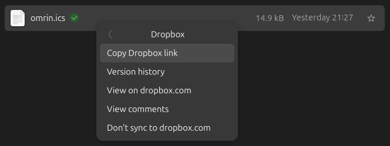
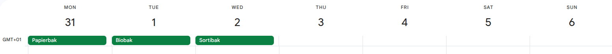

In my municipality, waste is collected by a company called Omrin. We have different waste collection days for paper and cardboard, compost, chemicals, and other kinds of trash, and the schedule can be a bit tricky to keep track of.
Omrin offers an app that shows these various waste collection dates, but I didn’t want to install yet another app for something as simple as knowing when to put out my trash. Instead, I wrote a Python script that pulls the collection dates from an API, saves this data as an ICS file which then gets synced to my Google calendar.
Read on if your trash is also collected by Omrin and you want to use this script yourself.
Setting up the script
Some assumptions
I assume you use a UNIX-based operating system like Linux or MacOS. The script itself should work on Windows as well, but setting it up to run periodically might be a bit different. You’ll also need a Dropbox account.
Downloading the script
You can grab the script from the following GitHub gist:

I saved it as omrin2ics in my ~/bin directory which is in $PATH. The location doesn’t really matter though.
Making the script executable
To make this script as easy to run as possible, I use a tool called uv. uv is becoming quite popular lately because it simplifies the process of managing Python dependencies and environments. It’s also crazy fast and perfect for simple scripts like these.
To use uv we do first need to install it using the instructions on this website.
At the top of the script, I included a shebang line along with the dependencies I need. Here’s how it looks:
#!/usr/bin/env -S uv run --script
# /// script
# requires-python = ">=3.12"
# dependencies = [
# "requests",
# "rsa",
# "pycryptodome",
# "icalendar",
# ]
# ///
# The rest of the script ...I make sure the script is executable:
chmod +x omrin2icsOnce this is done, I can simply run the script with this single command:
omrin2ics 8921HA 123 -o ~/Dropbox/Public/omrin.icsuv takes care of setting up and initializing the virtual environment each time we run this script.
The script itself expects a zip code (which in the Netherlands is always made up of 4 digits and 2 letters), a house number, and the location of where to write the ICS file to. I’m writing this to my Dropbox folder for reasons that will become clear later. The zip code and house number are obviously just example values, not my actual address. I don’t want to dox myself.
Running the script periodically with cron
The API returns all the waste collection dates a few months in advance, so we need to periodically rerun this script.
For this reason, I set up a cron job to automatically run the script every Monday at 3 AM. This way, my calendar stays up to date without me having to think about it. Here’s the cron job I added:
0 3 * * 1 bash -lc 'omrin2ics 8921HA 123 -o ~/Dropbox/Public/omrin.ics' > /dev/null 2>&1Why save the ICS file in Dropbox though?
By saving this file in my Dropbox folder, the file is automatically uploaded to the cloud. Dropbox allows us to generate a public link to the ICS file. We need this link to synchronize the file into Google Calendar.

Syncing the ICS file with Google Calendar
After copying the Dropbox link, here’s how to add the ICS calendar to Google Calendar:
Open Google Calendar:
Open Google Calendar in a web browser. Ensure that you are logged in with your Google account.Navigate to “Settings”:
In the top-right corner, click on the gear icon to access the settings menu. From the dropdown, select “Settings.”Choose “Add Calendar”:
In the settings menu, navigate to the “Add calendar” section.Select “From URL”:
Within the “Add calendar” section, choose the “From URL” option.Enter ICS calendar URL:
Copy and paste the URL you copied before. The link ends in&dl=0. After pasting you need to change this last0to1.Click “Add Calendar”:
After entering the URL, click the “Add Calendar” button. Google Calendar will validate the URL and add the calendar to your account.View the calendar:
Once added, you should see the new calendar in the left sidebar under “Other calendars.” You can also change the name of the calendar there.

Possible improvement
A more elegant approach would be hosting the script on a web server, letting Google Calendar sync directly instead of relying on Dropbox and a cron job. However, hosting costs money, so I went with this free solution. Hopefully, Omrin will offer a direct iCal feed somewhere in the future.